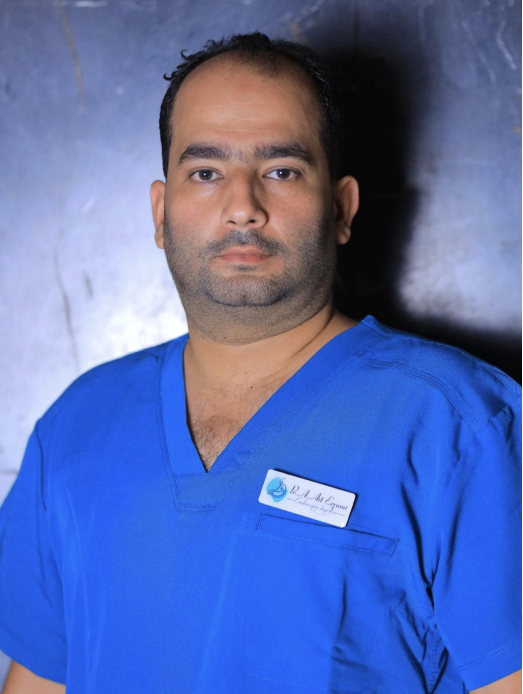

Qu'est-ce que le FibroScan® ?
Le FibroScan® (ou élastographie hépatique transitoire) est un appareil de mesure non invasive de la rigidité du foie. Il fonctionne sur le principe des ultrasons et des ondes élastiques : une sonde posée sur la peau envoie une légère vibration vers le foie et mesure la vitesse de propagation de cette onde à travers le tissu hépatique.
Plus le foie est fibrosé (cicatrisé), plus il est rigide et plus l'onde se propage vite. Cette mesure, exprimée en kilopascals (kPa), permet d'évaluer précisément le stade de fibrose — de F0 (aucune fibrose) à F4 (cirrhose). L'appareil mesure simultanément le score CAP (stéatose hépatique).
Qui doit faire un FibroScan ?
Le Pr. Adil Ait Errami prescrit un FibroScan dans les situations suivantes :
Hépatite B chronique
Évaluation de la fibrose avant de décider d'un traitement antiviral. Suivi sous traitement.
Hépatite C chronique
Bilan avant et suivi après traitement par antiviraux à action directe (DAA). Vérification de la guérison virologique.
NASH / Foie gras (NAFLD)
Maladie du foie gras liée à l'obésité, au diabète ou au syndrome métabolique — évaluation de la stéatose et de la fibrose.
Alcool chronique
Évaluation des lésions hépatiques liées à une consommation chronique d'alcool — fibrose, stéatohépatite alcoolique.
Transaminases élevées
Bilan hépatique anormal persistant inexpliqué — recherche d'une fibrose ou d'une stéatose sous-jacente.
Cirrhose / Maladies chroniques
Suivi de l'évolution, dépistage des complications (hypertension portale). Maladies cholestatiques (CBP, CSP).
Interprétation des résultats
Le FibroScan fournit deux mesures complémentaires :
- Rigidité hépatique (kPa) — évalue le stade de fibrose selon les seuils validés par maladie
- Score CAP (dB/m) — évalue le degré de stéatose (accumulation de graisse dans le foie)
| Stade Fibrose | Résultat indicatif (hépatite C) | Signification clinique |
|---|---|---|
| F0-F1 | < 7 kPa | Pas ou peu de fibrose — surveillance simple |
| F2 | 7 – 9,5 kPa | Fibrose significative — traitement souvent recommandé |
| F3 | 9,5 – 12,5 kPa | Fibrose avancée — traitement impératif |
| F4 | > 12,5 kPa | Cirrhose — suivi spécialisé, dépistage CHC |
* Les seuils varient selon la maladie hépatique. L'interprétation se fait toujours dans le contexte clinique complet.
Préparation à l'examen
- Jeûne de 2 heures minimum (idéalement le matin à jeun)
- Pas de sport intense la veille de l'examen
- Aucune préparation médicamenteuse spécifique
- L'examen peut être réalisé en ambulatoire — pas d'accompagnant obligatoire
Hépatologue expert à Marrakech

Pr. Adil Ait Errami
Gastroentérologue – Hépatologue – Professeur Universitaire
CHU Mohammed VI de Marrakech · Clinique Privée
Le Pr. Adil Ait Errami dispose du FibroScan® au CHU Mohammed VI de Marrakech et en clinique privée. Il interprète les résultats dans le cadre d'une consultation hépatologique complète : bilan biologique, imagerie (échographie, IRM hépatique) et décision thérapeutique.
Son expertise en hépatologie couvre les hépatites virales B et C, la NASH, la cirrhose et ses complications (hypertension portale, ascite, encéphalopathie hépatique) et le carcinome hépatocellulaire (CHC). Il réalise également les ponctions-biopsies hépatiques guidées par échographie pour les cas complexes.